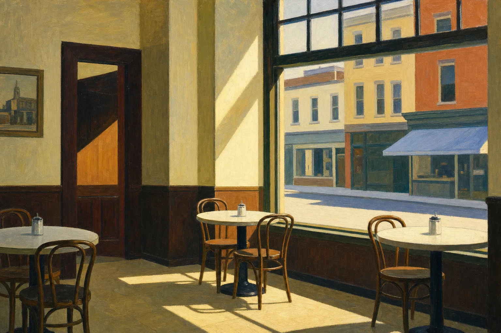

After Edward Hopper · The Image Suite
A Painter’s Pages
Every painting on this site is a visual gloss on the page it opens — an ordinary room charged with light, a window, a doorway, a figure at the edge of something unspoken. This page gathers all ninety-one, each with the note that explains why it stands where it does.

The choice of Edward Hopper is itself an argument. Hopper is the painter of stillness and solitude — of the ordinary room charged with light, of people alone at a window, of the space just before something goes unsaid. That is exactly the territory of the fiction and criticism this site presents. The paintings below are rendered in the manner of Edward Hopper; they are not decoration but a visual gloss on the page each one opens. Touch any painting to read its note.
Light
The ordinary room charged with light.
Water
What the sea carries, and keeps.
Thresholds
Alone at the threshold of something unspoken.
Rooms & Solitude
People at the quiet edge of a room.
Objects & Devotion
Matter made a vessel for grace.
Fire & Ritual
The small rite that returns.